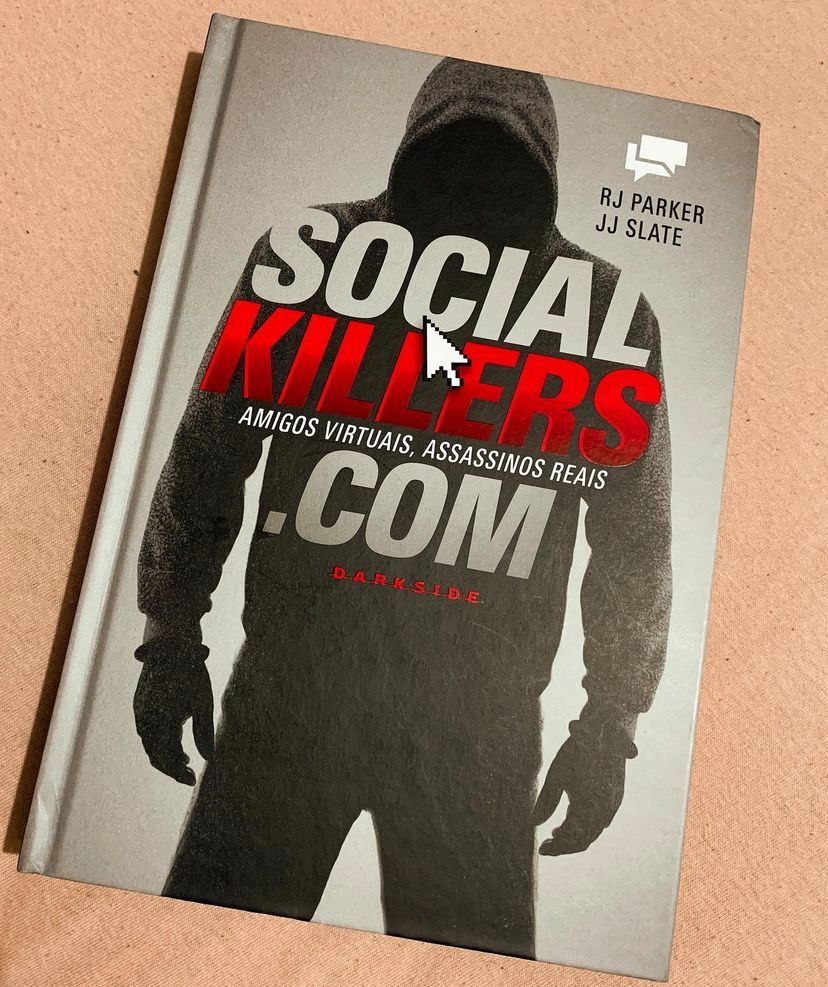

SocialKillers.com
(RJ PARKER e JJ SLATE - Darkside)
⭐⭐⭐⭐
Com 34 relatos de crimes reais que tiveram início a partir da internet, os autores vão mostrar como à internet pode ser perigosa e mortal ! RJ Parker e JJ Slate, reúnem alguns dos casos mais angustiantes de criminosos que usaram as redes sociais para se aproximar de suas vítimas. Stalkers, predadores sexuais, assassinos, canibais, torturadores. A lista, infelizmente, não é pequena. E novas solicitações de amizade continuam chegando a cada dia. Parker e Slate deixam claro que esse não é um fenômeno novo. Muito antes da internet, criminosos usavam classificados de jornal para descobrir e atrair suas presas. Mas o anonimato da web permite que cada vez mais lobos usem roupas de cordeiro nas suas fotos de perfil.
A obra ao meu ver deixou a desejar em alguns pontos. Os casos apesar de bem detalhados com cenas de crimes peca algumas vezes não se desenvolver ou finalizar de forma interessante. O que eu achei mais legal foi que usaram da tecnologia para falar de tecnologia, e nisso a @darkside surpreendeu ao relançar o livro. Cada um dos casos contém um QR CODE onde você vai ter acesso a fotos referente ao caso em questão. E achei a ideia bem legal.
Posso dizer que o livro não é nem de longe uma obra prima sobre true crime, a própria Darkside tem uma infinidade de livros mais completos e desenvolvidos sobre o assunto. Posso dizer que valeu a pena porém, conhecer vários casos que não são “famosos” (pelo menos não aqui) mas, são bem chocantes! Então, se você gosta do assunto vale a pena adicionar SocialKillers.com a sua coleção e conhecer até onde as redes sociais podem ser perigosas!
Como você anda se protegendo atrás da tela?